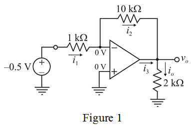

Determine the current flowing through  resistor.
resistor.
Determine the current flowing through  resistor.
resistor.
Refer to Figure P2.16 in the textbook.
Consider the op-amp is ideal type.
Voltages at inverting and non-inverting terminals are same and equal to zero.
Re-draw the circuit diagram with branch currents and node voltages.

From Figure 1, the op-amp is operating in inverting configuration and equation for gain of the op-amp is,
Determine the current flowing through resistor.
Determine the current flowing through resistor.
Determine the current flowing through  resistor.
resistor.

Apply Kirchhoff’s current law at the output terminal of the op-amp.
Therefore, the currents in all branches and voltages at different nodes are:
Current supplied by the source is and current delivered by op-amp is.This addition current is supplied by the op-amp.